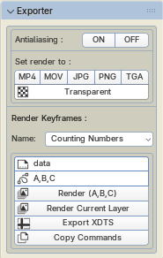
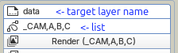
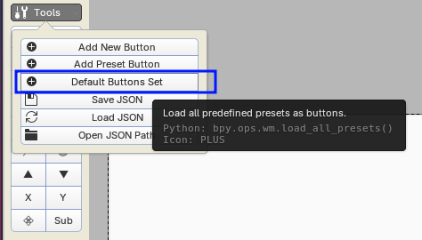
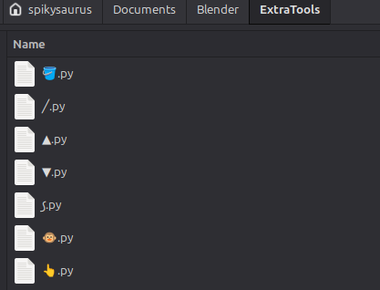
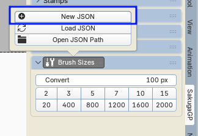
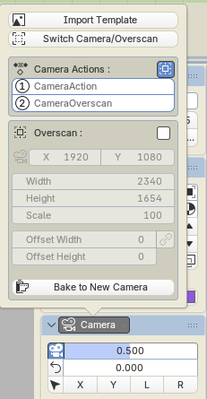
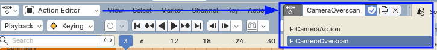
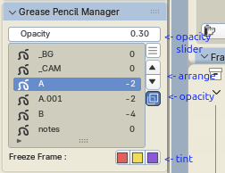
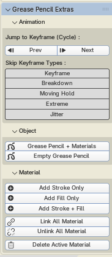
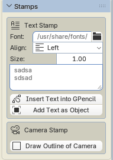

SakugaGP is a collection of Free Grease Pencil addons made by 2D Animator for 2D Animators.
Requirement : Blender v5.x
Download the addons via Gumroad to get email update notifications, also you can ask questions or report any bug on SakugaGP's Discord Server.
Installation
*Better uninstall the old addons first before installing the new versions. Read blender docs : How to Install AddonsTips
Addons
Exporter


Extra Tools
User customizable buttons in the toolbar

Brush Sizes
Brush Sizes Palette like Krita/CSP
Camera
Adds Camera Mirror/Rotation without leaving Grease Pencil Draw Mode and Import Animation Template

More about the Overscan feature :
Overscan is a feature that makes Camera resizing behave like canvas resizing similar to other drawing programs (the Overscan script is originated from https://projects.blender.org/pioverfour/camera_overscan)Manager

Extras
Extra features for SakugaGP
Stamps

Recommended Addons